Geplante Projekte (Start 2025)
1. Containerlieferung
Verschicken von Hilfsgütern via Container (PV-Anlagen, Radlader) aber auch Dinge des täglichen Bedarfs wie Computer und Bildschirme, Fahrräder, Kleidung, Möbel, Kinderbücher u.v.m. Im Prinzip wird fast alles gebraucht.
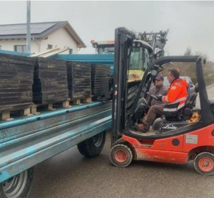
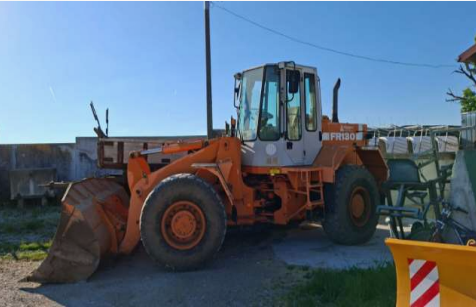
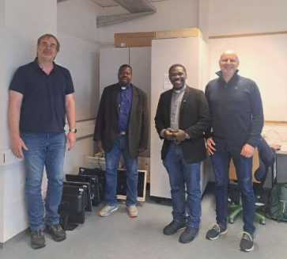
2. Hühnerzucht Burkina Faso
Auf einem neuen Grundstück in Ouagadougou soll eine Hühnerzucht für Eierproduktion und Mast entstehen. Zuvor wurde der Hühnerstall von Dieben beschädigt und alle Hühner entwendet. Nun soll das Projekt mit hitzeresistenten Hühnern neu aufgebaut werden. Ein neuer Brunnen ist erforderlich, da der alte bei einem Unwetter zerstört wurde. Parallel ist eine Fischzucht geplant. Josef, ein vom Norden vertriebener junger Mann, wird hier zum Hühner- und Fischbauern ausgebildet.
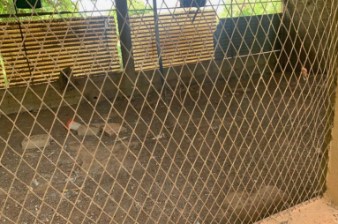
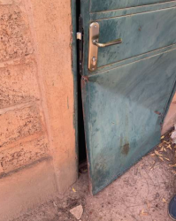
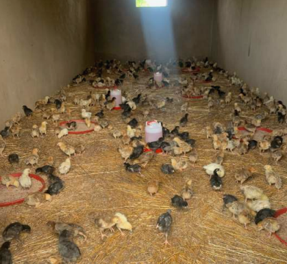
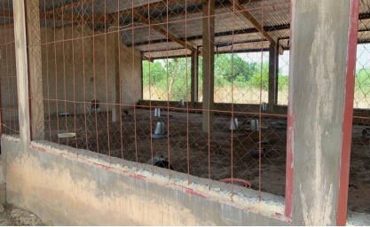
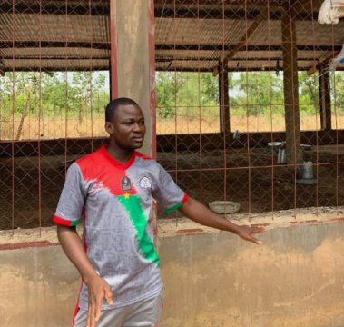
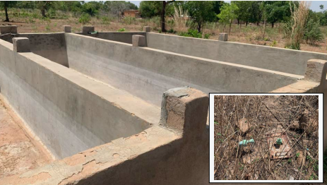
3. Landwirtschaft und Brunnen
Um ein Kloster stehen Ländereien, deren Landwirtschaft mit einem neuen Traktor wieder betrieben werden könnte. Zusätzlich ist der Bau eines „Josephsbrunnen“ in Uganda geplant, um ein Kindergarten- und Hospitalprojekt zuverlässig mit Wasser zu versorgen. Die Kosten für den Brunnen sind ca 4000€. Einzelheiten: siehe Laufende Projekte
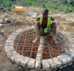
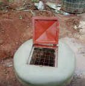
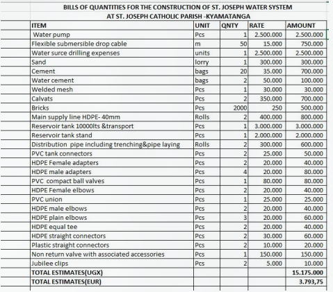
4. Gästezimmer in Fort Portal (Uganda)
Begleitend zum Kirchenbau sollen drei Gästezimmer entstehen. Dort können Ärzte, Lehrer und Bauarbeiter untergebracht werden, die mehrere Wochen in Uganda helfen. Außerhalb der Einsätze kann die Kirchengemeinde die Zimmer nutzen. Die geplante Investition dafür beträgt 5000€.

5. Priesterpatenschaften
Mit 50 Euro pro Monat kann ein Priesterstudium in Afrika finanziert werden. Interessierte können eine (auch anteilige) Patenschaft übernehmen und junge Männer auf ihrem Weg persönlich begleiten.
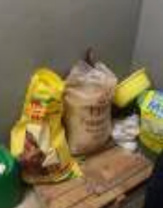
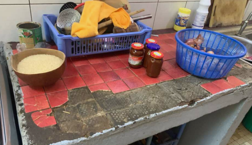
Seminaristen in Ouagadougou
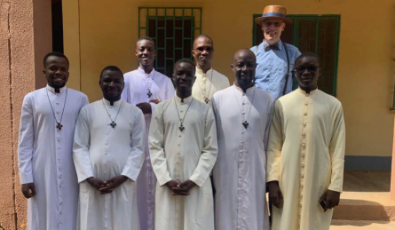
Seminaristen in Fort Portal (Uganda)
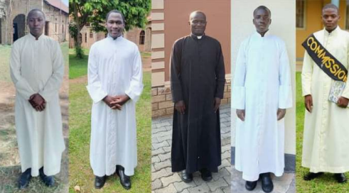
Weitere Projekte für 2026
- Nigeria – Zusammenarbeit mit Saatgutherstellern
- Nigeria – Handel mit Ersatzteilen und Computern
- Nigeria – Bau/Vermietung eines Mehrfamilienhauses
- Uganda – Ausbau von Schulen, Weiterbau eines Kindergartens
- Burkina Faso – Weiterentwicklung einer Krankenstation